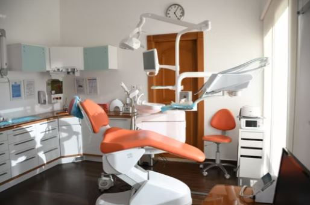
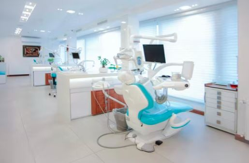
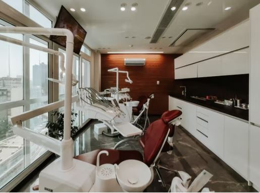
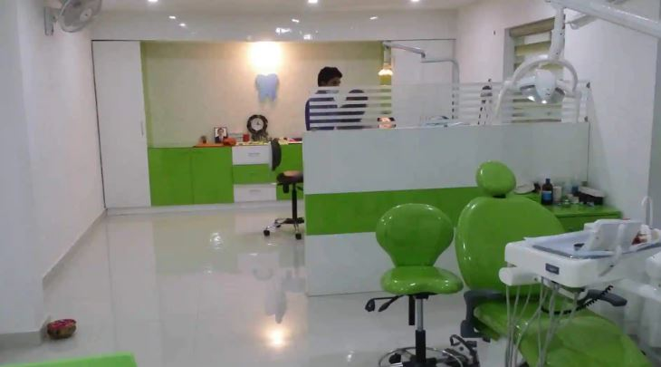

Our Clinic
   We have an adnaced clinic with new and harmless technology which makes even surgery looks so simple and painless. With this new technology we have experts to maintain it and provide our patients with the best of comfort. They make sure that all measures of treatment are made as painless as they could be.
Satisfied Patients


We have been providing our services for past 20 years with over 1000+ satisfied patients. We have a chain of clinics Pan India. To avail our services register yourself or contact us via phone or email.